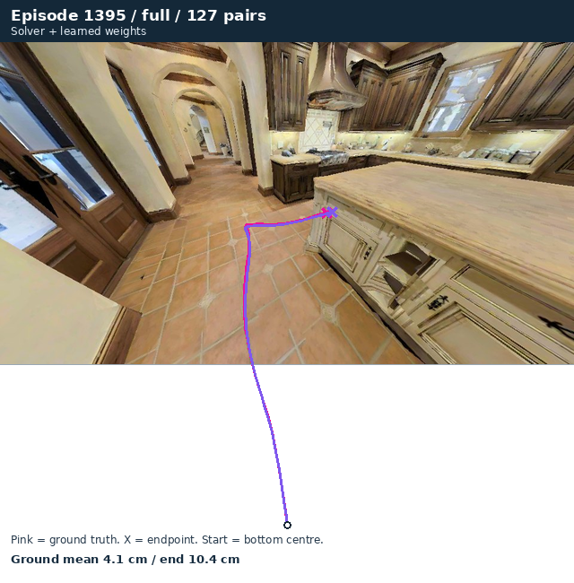
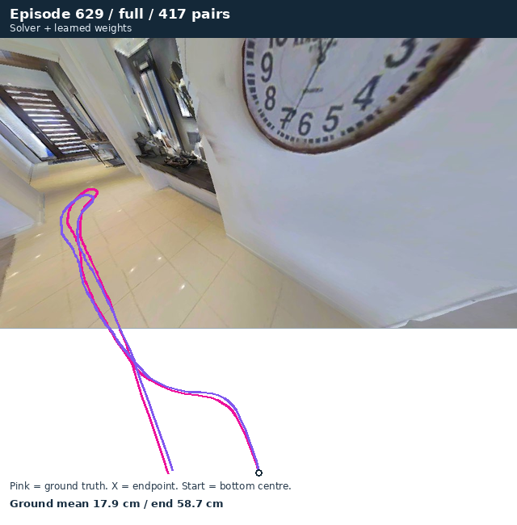
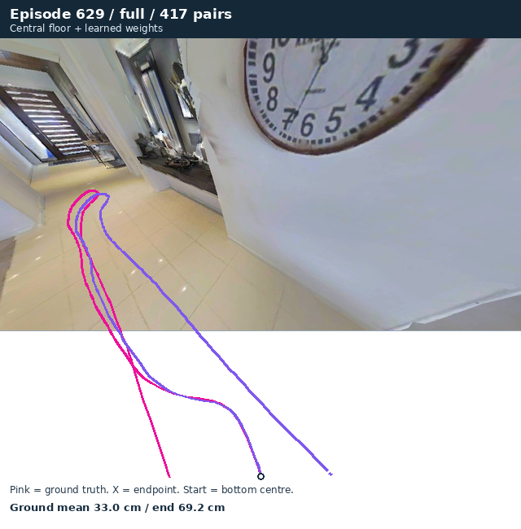
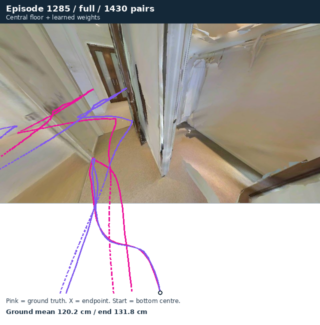
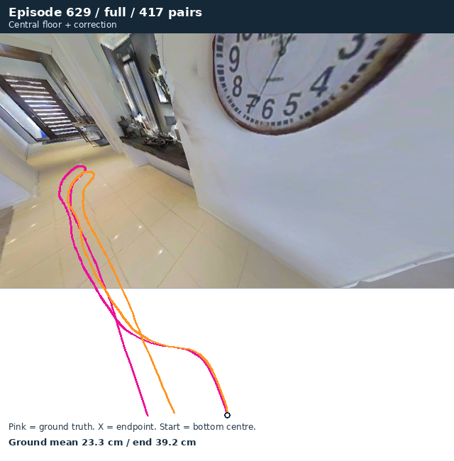
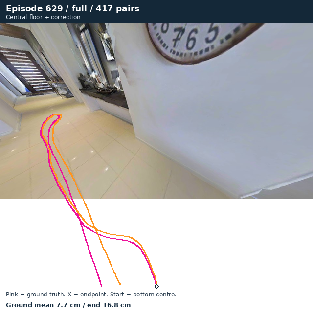

All solver work ·11–12 November
One review folder for the dashboards, trajectory PNGs, plots, raw analysis, source and training evidence. The original run folders are preserved.
Strongest validation result, with its limits
15.45 →4.65px ADE
Central-floor selection with the same frozen learned-weight checkpoint; float32,104 overlapping windows from26 sequences in one validation house. The original matched training pilot's best arm was the yaw-local reference at10.96px under its bfloat16 evaluation. These are separately declared comparisons.
The history gate still fails. Full-episode results are mixed, including a regression on629. This is not yet an accepted cross-scene model improvement.
Key trajectory PNGs: successes and regressions
These are selected illustrations, not a benchmark sample. Click any PNG to enlarge it. Use the full galleries and CSV for all episodes and legs.
Low-error original recording; illustrative, not a benchmark winner
Episode1395 · 127 pairs · 4.12cm mean ground error

Episode629 before the central-floor intervention
Episode629 · 417 pairs · 17.88cm mean ground error

Episode629 regression: keep this beside the gains
Episode629 · 417 pairs · 33.01cm mean ground error

Long recording improved by central-floor selection
Episode1285 · 1430 pairs · 120.22cm mean ground error

Height experiment control: original RGB and central floor
Episode629 · 417 pairs · 23.26cm mean ground error

Separate height experiment: reconstructed RGB and central floor
Episode629 · 417 pairs · 7.71cm mean ground error

All views and underlying evidence
Recorded episode837 is a locked-test-scene diagnostic, not a selection set. Model weights, full RGB recordings and flow caches remain at documented server paths. This review opens offline without them.